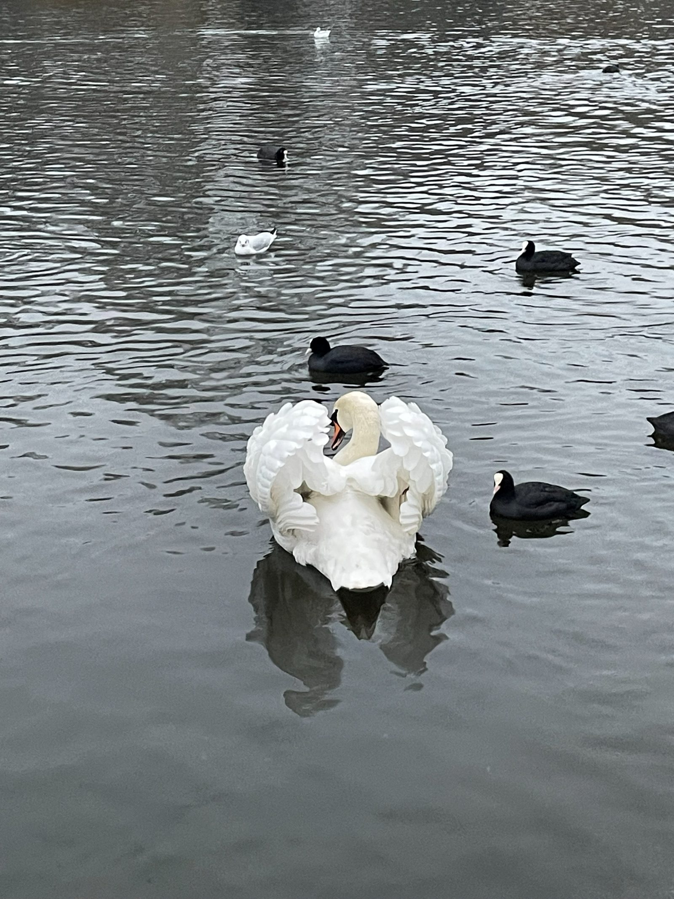
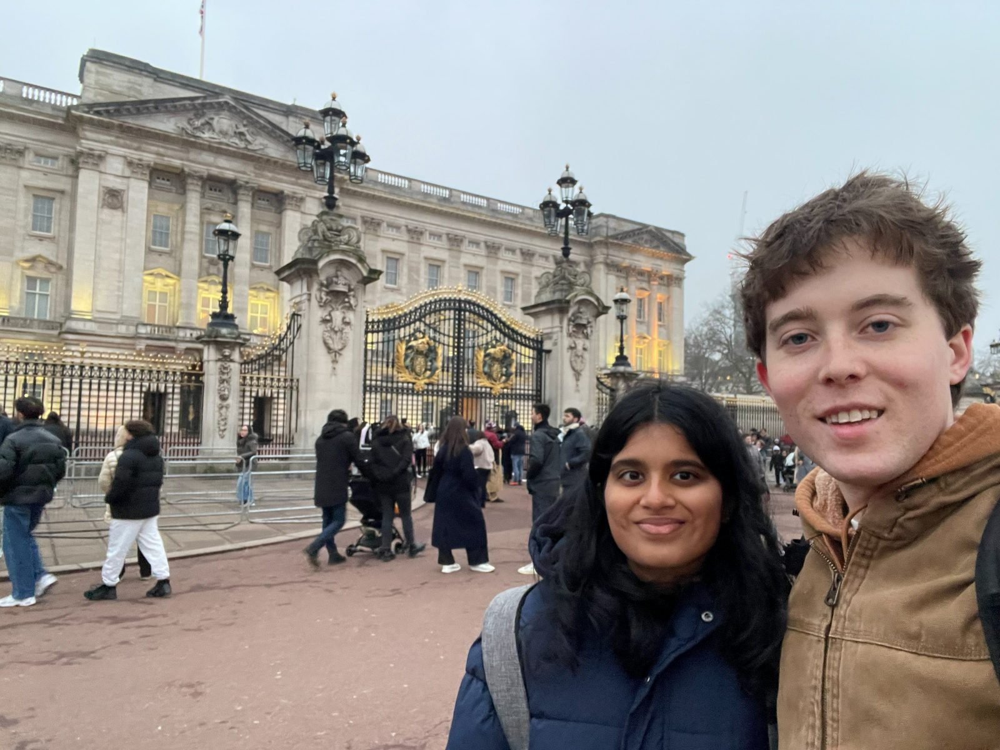
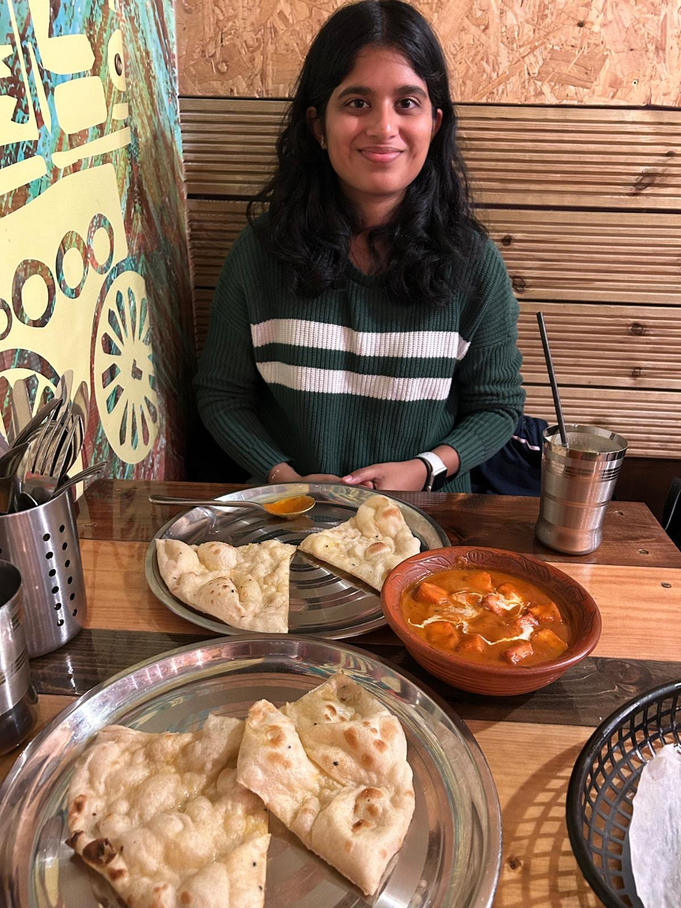
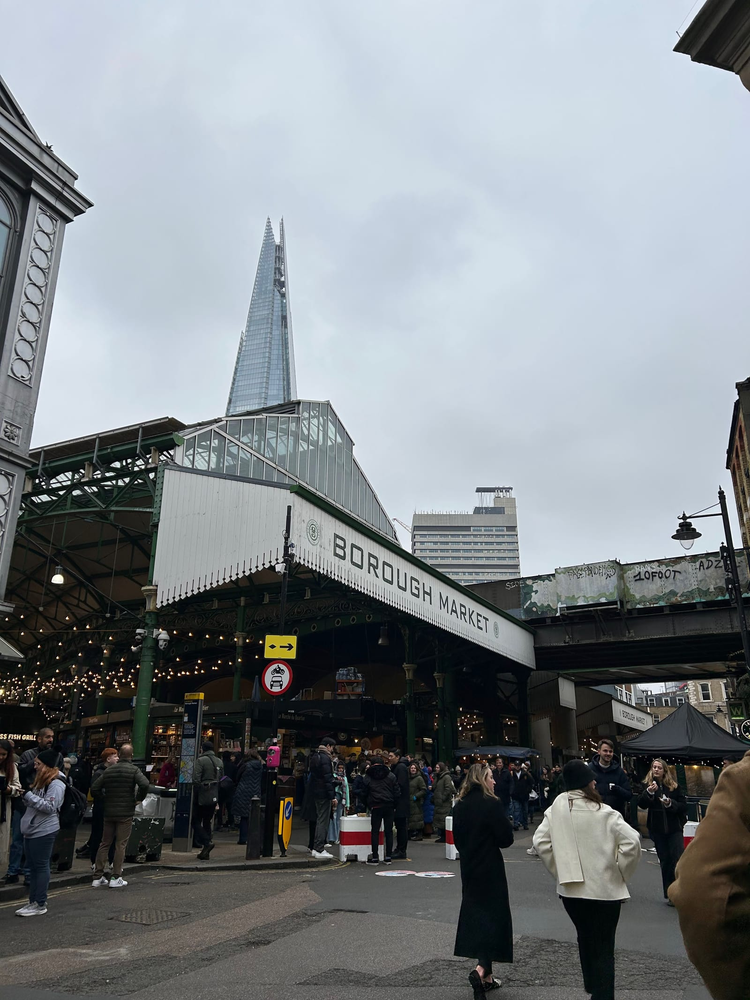
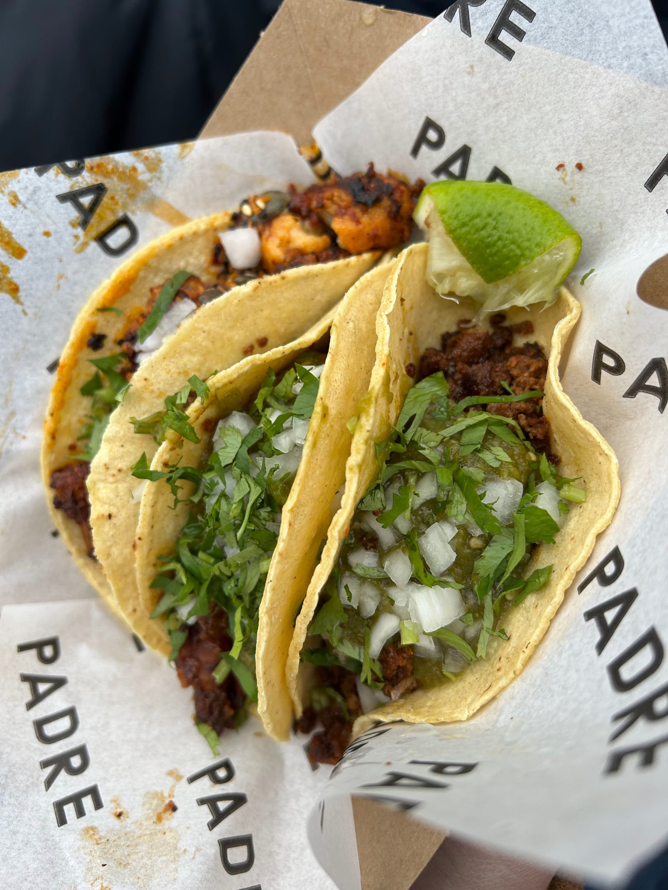
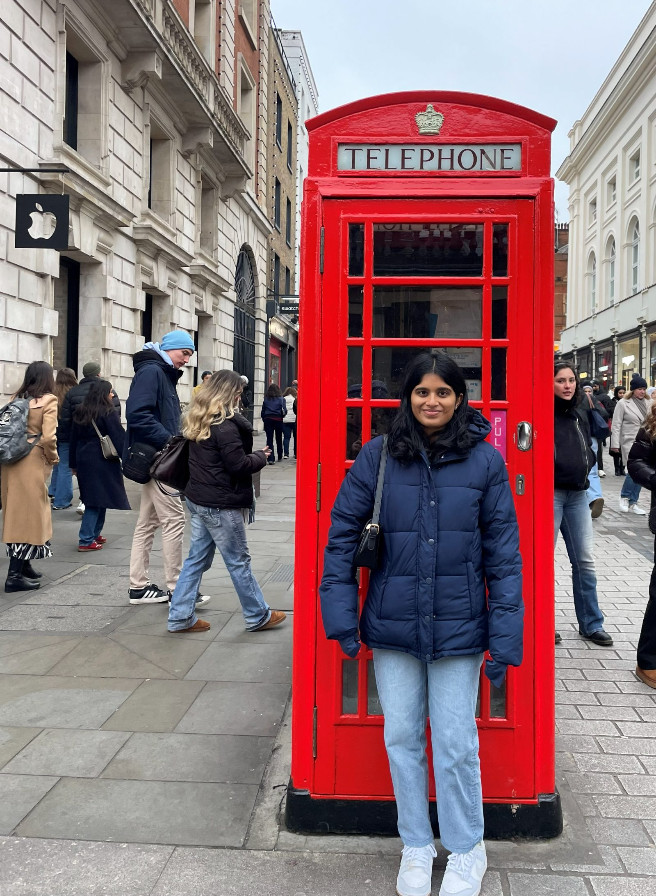

LONDON
Saturday
- Ryanair flight to London 11:35 was delayed abt an hour
- Had to change airport shuttle bus time
- Took national express bus from Stansted into London
- Decided to jump off early spontaneously and get on the underground since it was faster than just driving and stopping thru the city on a bus
- Went to Westminster
- Big Ben
- No horse guards this time
- St James park

- Buckingham Palace

- Big Ben
- Checked in at the Destination Hostel
- Nice place, nice people, good bathrooms, pub downstairs, big free breakfast, nextdoor to Pimlico underground station
- Walked to Dishoom for dinner
- 55 minute wait and we were hungry so we left
- Decided on Dhaba Indian Street Food
- We got...
- Mango lassi
- Papadom
- Pav Bhaji
- Paneer masaladar
- Bread pakora
- Very good food even though there was no one else there the whole time

- We got...
- Walked through Battersea Park and to the train that took us back to see Westminster lit up at night, much better looking and quieter than the daytime
-
1 / 3
- Went back to the hostel for a drink while we planned for the next day
Sunday
- Got up at 7 and had the free breakfast downstairs, good selection of quality food, a toaster, cold drinks, etc.
- Went to Notting Hill
- Very dead area during a Sunday morning in the winter
- Went up Tower Bridge
- Saw someone propose right after on the bridge
- Walked past HMS Belfast to Borough Market

- Mahathi got chocolate strawberries she's been wanting for years
- I got a lemon orange ginger drink which was good
- We shared a 3 taco meal one chorizo for me and one potato and one cauliflower for her

- I got fish and shared the chips with Mahathi
- Went to Trafalgar Square
- Huge monuments and statues and a fountain
- Walked around aimlessly

- Found a street performer
- Some toddler started riding a scooter through the middle of the crowd and he told the kid to do a backflip, very funny but no one but us really laughed at this
- The kid ignored him and started crying and asking "mommy where are youuu?"
- He was very beggy for his donations though, very annoying
- Some toddler started riding a scooter through the middle of the crowd and he told the kid to do a backflip, very funny but no one but us really laughed at this
- Took a train back to the hostel to grab our bags and headed home